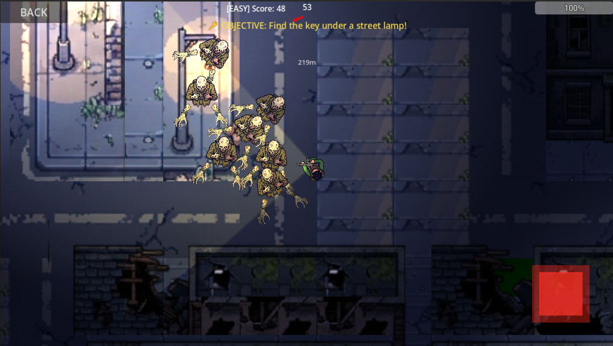

Godot game · Survival prototype
The Last Train Home
A top-down survival prototype where the player rescues NPCs, avoids enemies, finds a key, and reaches the station before time runs out.

Current scope
The active Godot 4.6 rebuild includes enemy and NPC pooling, mobile and desktop control paths, a key-and-station objective, local save data, and settings.
An earlier Godot 4.5 version is retained for reference. Asset provenance is being reviewed before a public release or itch.io build.